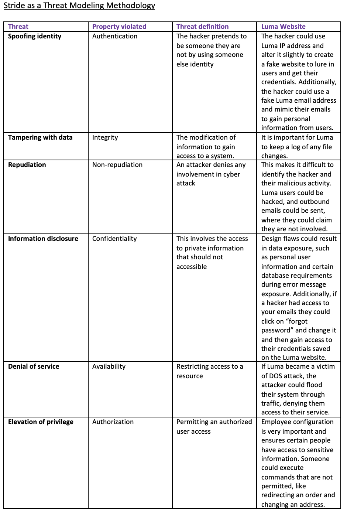
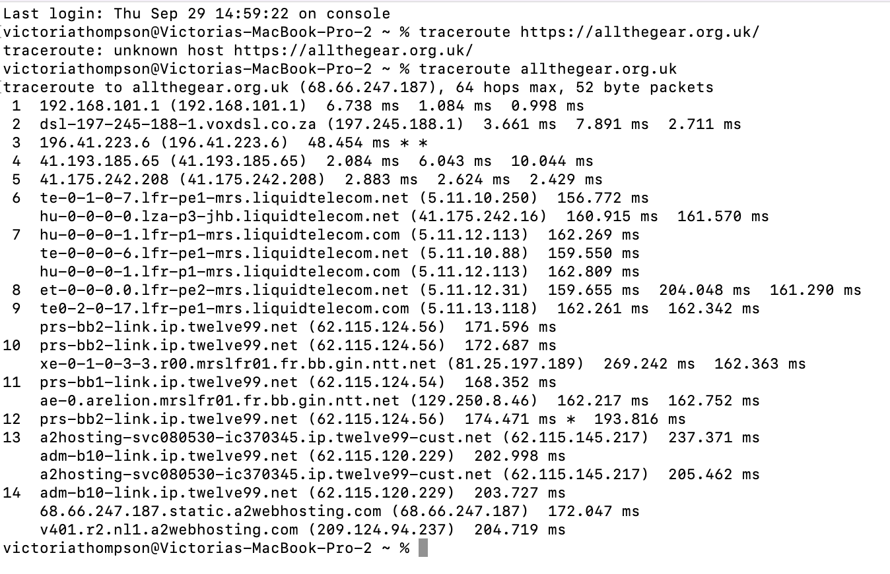

Features
Identify and analyse security threats and vulnerabilities in network systems and determine appropriate methodologies, tools and techniques to manage and/or solve them. Articulate the legal, social, ethical and professional issues faced by information security and risk professionals.
A fully digital enterprise is a company that has adopted a complete digital approach. Digital tools and technologies are used to conduct all business operations. Digital technologies can increase performance, “by cutting maintenance time and costs” (Wei et al and Spremic, 2019). Digital technologies, such as Artificial intelligence and Internet of Things empower companies to have a competitive advantage in the business sector.
learn more
Cyber threats endanger business’s as they are well thought out attacks that uncover technical vulnerabilities and challenge information security. A strategic plan to implement protective measures to avoid cyber-attacks is essential for business security. Small to medium enterprises may not have the resources to ensure such security. The risks associated with SME’s have a negative impact on company success, as it can lead to the loss in revenue and they may not be able to recover. Ultimately, smaller corporations are more vulnerable and it may be easier for an attacker to gain access to control systems.
Seeing that the electrical consumption in developed societies cannot match that of GDP growth, “utilities must operate, maintain, and modernize their systems without the benefit of increased load-based revenue to pay for it” (Wei et al and Spremic, 2019). Consequently, business are at risk of cyber-attacks, climate change and the constant need to keep up with the forever growing digital world. Nevertheless, advances in technology have led to innovation and offer a new way to approach challenges and solve problems.
The global energy crisis has led to the increase in gas and electricity, causing pricing to go up. Enterprises are dependent on energy and therefore the lack of it can lead to their downfall. The Russian invasion of Ukraine has made the crisis worse, prohibiting some countries from receiving gas supplies (Melville, 2022). Ultimately, the rise in energy costs impacts business’s. In summary, the cost of production has increased leading to an increase in revenue.
References
1. Spremić, M. & Šimunic, A. (2018). Cyber Security Challenges in Digital Economy. Proceedings of the World Congress on Engineering 2018 (1).
2. Wei, J., Sanborn, S. & Slaughter, A. (2019) Digital innovation. Creating the utility of the future. Deloitte Insights.
3. Melville, G., 2022. Energy crisis 2022: Impact on business and practical steps you can take – Carbon Intelligence. [online] Carbon Intelligence. Available at:
Responses
Hi Victoria,
Thank you for your detailed and thought provoking post.
I agree with the points raised. A completely digital enterprise is one that focuses on the flaws that exist inside an organization and finds solutions to improve network operations and the customer experience by utilizing digital technologies. The digital business cannot be viewed as a single department inside an organization; rather, it is a vast, all-encompassing force that involves each and every position within a company.
Regards, Beran
Hello Victoria ;
I agree with your comment "A strategic plan to implement protective measures to avoid cyber-attacks is essential for business security". The Information Security Plan should be built as an integrated one. It should be comprising of confidentiality, integrity, availability and reliability of its information assets. (Jayanthi, 2017).
There is a need for the adoption of a method of monitoring the security and threat intelligence as well as a continued awareness of the need for security among its users. (Alhayani et al.).
The creation of awareness together with appropriate training to employees, managers, suppliers and customers can help to reduce the risk of security attacks. On the other hand, it requires resources, for example hire special consultants as well as developing training programs for the different parties. At the time of economic crisis, this will not get the right attention which may lead to high risk of cyber-attacks.
Reference:
- Alhayani Bilal, Sara Taher Abbas, Dawood Zahi Khutar, Husam Jasim Mohammed, Best ways computation intelligent of face cyber attacks, Materials Today: Proceedings,2021, Available from: https://www.sciencedirect.com/science/article/pii/S2214785321016989
.[Accessed 08 October 2022].
- M. K. Jayanthi, "Strategic Planning for Information Security -DID Mechanism to befriend the Cyber Criminals to assure Cyber Freedom," 2017 2nd International Conference on Anti-Cyber Crimes (ICACC), 2017, pp. 142-147, doi: 10.1109/Anti-Cybercrime.2017.7905280. Available from: https://ieeexplore.ieee.org/abstract/document/7905280.[Accessed 08 October 2022].
Features
The Pros and cons of logging – The impact of log4j
The ability to Log data has numerous advantages and disadvantages. Logging data using computers to monitor a system is far more reliable than doing it manually. On the other hand, data logging systems are expensive and there is a huge amount data to manage.
learn more
Pros of logging data: - Data logging systems provide accurate readings and measurements, which are captured at the correct moment in time. - Data logging software makes it easier to interpret readings and make sure nothing is missed. Cons of logging data: Logging data is growing at a rapid rate, making it difficult for security analysts to approach. Additionally, the vast amount of data may be distributed across different systems or files (Ekelhart, 2018). This makes it difficult for security specialists to react to complex cyber-attacks. “Log4Shell is a software vulnerability in Apache Log4j 2, a popular Java library for logging error messages in applications” (Dynatrance, 2021). In this instance, logging data allows an attacker to have remote control over a system, where they can execute malicious code and access private data.
References
1. Dynatrace (2021) The Log4j vulnerability explained: What is Log4Shell? 2. Ekelhart, A. et al (2018) Taming the logs - Vocabularies for semantic security analysis. Procedia Computer Science (137).
▲Solar Winds exploit using the Cyber Kill Chain
Vulnerability Analysis – Literature Review Activity
Carry out a literature search/audit on software sites and the national vulnerabilities database to create a baseline audit on potential vulnerabilities with websites.
Chosen website: https://allthegear.org.uk/
I chose to use the STRIDE threat modelling approach. In doing so, I was able to identify vulnerabilities without having to execute any code.
learn more
▲
Scanning Activity
Perform a basic scan using standard tools such as traceroute, dig and nslookup.
learn more
1. How many hops from your machine to your assigned website? The total hops calculated by traceroute were 14. 2. Which step causes the biggest delay in the route? What is the average duration of that delay? The largest delay to do a round trip to the route and back to my computer was 269.242 ms. 3. What are the main nameservers for the website? The following nameservers were identified using nslookup: allthegear.org.uk nameserver = ns2.a2hosting.com. allthegear.org.uk nameserver = ns3.a2hosting.com. allthegear.org.uk nameserver = ns4.a2hosting.com. allthegear.org.uk nameserver = ns1.a2hosting.com. 4. Who is the registered contact? organisation: Nominet UK address: Minerva House Edmund Halley Road Oxford Science Park Oxford OX4 4DQ United Kingdom 5. What is the MX record for the website? The mail exchanger = 0 mail.allthegear.org.uk. 6. Where is the website hosted? Amsterdam, Netherlands.
▲Scanning and Collaborative Wiki Activity
Perform scans against your assigned website(s) using the tools available in Kali Linux.
learn more
Reviewing an Assessment Reporting Template
Reviewing the assessment template from PurpleSec.
learn more
Vulnerability Audit and Assessment - Baseline Analysis and Plan
Introduction
The most primary concepts that reinforce security management are confidentiality, integrity and availability. If these three measures are properly implemented, it can help control threats and reduce system weaknesses. A vulnerability assessment and analysis of the following website, Luma (Luma, 2013) shows us that a design of a system is never flawless and impenetrable when it comes to cyber-attacks. A pan test can be conducted to achieve “assurance in the security of an IT system by attempting to breach some or all that system’s security, using the same tools and techniques as an adversary might” (NCSC, 2017).
Luma is an ecommerce site that sells sports gear. It requires user information and payment details in order to make a purchase. Consequently, the website permits access to personal details that could be used for malicious activity.
learn more
Tools
Based on the chosen website, I have selected the following tools for a security assessment:
1. Nmap is used for network scanning. This is done by scanning an IP to create an audit trail of the system. The audit helps identify system versions and other ports. (Lodha, 2017). Although Nmap is a popular tool, it has limitations as it only caters for some VPN users, it prevents you from testing your personal device or some registered IP addresses (Nmap, 2022).
2. The Harvester is a software program that allows you obtain personal information, such as a person’s username and password. An attacker could use this information vindictively (Terneva, ladimirov and Nikolova, 2021). Luma requires you to input a name and password in order to purchase products. TheHarvester helps improve human assets by highlighting data breaches. Thus, it is important that password policies should use second forms of authentication and ensure that passwords meet complexity requirements to protect their user’s privacy.
3. DIG/ NSLOOKUP uses the command line to do a DNS look up and collect records. Its aim is to map an IP address to a domain name (IBM, 2022). This argues for the validity of the website. A cyber threat can occur, when an attacker replaces “a legitimate IP address in the server's cache with that of a rogue address to redirect traffic to a malicious website, collect information or initiate another attack” (Techtarget, 2022).
The chosen tools should not have an impact on the business’s day to day operations as it won’t have an impact on site functionality. However, if any fraudulent activity is discovered it should be reported to the authorities for further investigation to ensure security.
Conclusion
It is important to note that confidentiality involves the management of data and who has access to it by overseeing permissions. It is a company’s responsibility to adhere to policies and security protocols for the protection of their client’s data. In conclusion, I will be making use of the above-mentioned scanning tools over the next three weeks to complete a full vulnerability assessment for the target host: https://allthegear.org.uk.
References
1. Allthegear.org.uk. 2013. Luma. [online] Available at:
2. Ibm.com. 2022. Executing DIG Commands (Replacement for NSLOOKUP). [online] Available at:
3. NCSC (2021) Cyber Essentials: Requirements for IT infrastructure. Available
from: https://www.ncsc.gov.uk/files/Cyber-Essentials-Requirements-for-IT-infrastructure-3- 0.pdf [Accessed 8 October, 2022]
4. Z. Terneva, I. Vladimirov and D. Nikolova, "Accessing LinkedIn and Google E-mail Databases Using Kali Linux and TheHarvester," 2021 56th International Scientific Conference on Information, Communication and Energy Systems and Technologies (ICEST), 2021, pp. 59-62, doi: 10.1109/ICEST52640.2021.9483460.
▲
Module Reflection
Assignment Brief
I understand Object-Orientated Programming in computing as the organization of data into objects that have unique attributes and behaviors. We can use Object-Orientated programming to understand, manipulate, process and store data in a readable manner. I learnt from the beginning of the module that data can turn into information, which then becomes knowledge. This is done by assigning data meaning when processing it. Overall, “we can say information is data plus meaning.” (Essex Online, 2021).
learn more
Data holds value and is prevalent in modern society. We used data based systems in our day to day lives, such as online shopping applications. Seeing that information systems are so widely used, they have a moral responsibility to ensure they function correctly. For instance, an information system was used to keep record of United States prisoners, involving their sentence and behaviour. The system was relied on to see whether or not a prisoner’s documented good behaviour could lead to a reduction in their sentence. Since 2002, the system had been faulting and this went undetected for 13 years. The system was malfunctioning and allowing prisoners to be released earlier than they should have been. This highlights the importance of a well-planned information system to ensure correct functionality.
The fundamentals of Object- Orientated Programming are the ability to define a class, assign attributes to a class, along with operations. Attributes can be broken up into different data types, for instance integers or a string. An operation is made up of parameters. There are also different forms of association between classes. There is generalization, where one class inherits the attributes of a parent class. Composition indicates a strong relationship between classes, where a class is dependent on the existence of another class. Aggregation is when two classes do not rely on the existence of another, and instead can exist completely independently.
I found the mid-module assignment to be a great way to visually understand the relationships between classes. I felt that providing a visual solution to self-service checkout systems for customers was an informative way to learn about objects and how they interact with one another. Overall, I felt that Unified Modelling Language (UML) allows you to easily identify an error and improves the debugging process and maintenance of the information system.
I found the next assignment, where we required to implement an object-orientated system more difficult. This is because I found it hard to translate a visual diagram into readable python code. I feel that I have a moderate understanding of python conventions. However, I believe I could improve on my skills by doing further testing and catering for different cases where applicable. My feedback also highlighted, that it would be advantageous to break up my solution into different source files. This is something I will work on implementing in the future.
We revisited SQL in this module. I really enjoy SQL and feel it something I understand well when it comes to communicating, storing and manipulating data in a table format. We were then introduced to web development. Web development is something I am familiar with and have engaged with in my work environment. I am familiar with basic web development and am proficient in HTML, CSS and JavaScript. I found the introduction to Flask as a micro web framework to be useful. I learnt that the route is seen as a controller in Flask, where it will direct us to a particular space to perform certain functions. Flask allows you to create a server where a web application exists and is created using python code.
Overall, I found the module intellectually stimulating and at times challenging. I believe I was able to explore many aspects of Object-Orientated Programming and found the material was well scripted. I feel the assignments are crucial, and where I gain most of my knowledge, as I am required to understand and apply what I have learnt. Nevertheless, I felt I could have managed my time better and would have benefitted from engaging more with my peers. I look forward to continuously learning and improving.
References
1. Baseline (2003) Hospital Revives its Dead Patients. Available from: https://www.baselinemag.com/c/a/Projects-
2. Networks-and-Storage/Hospital-Revives-Its-QTEDeadQTE-Patients [Accessed: 14 November 2021]
BBC (2015) US Prisoners Released Early by Software Bug. Available from: https://www.bbc.co.uk/news/technology- [Accessed: 14 November 2021]
3. Shelly, B., Cashman, T. & Rosenblatt, H.(2006) Systems Analysis and Design: Sixth Edition. Chapter 1. Thomson Course Technology Course.
4. Sommerville I. (2015) Software Engineering. 10th. ed. Essex: Pearson.